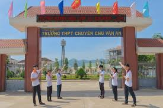
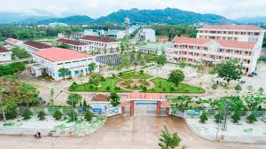
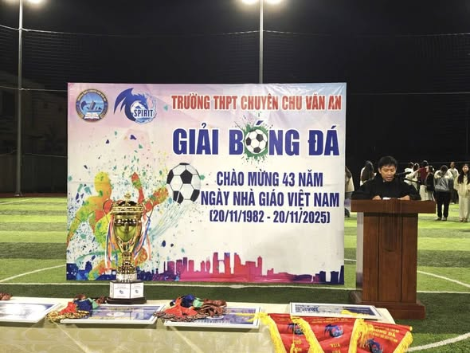
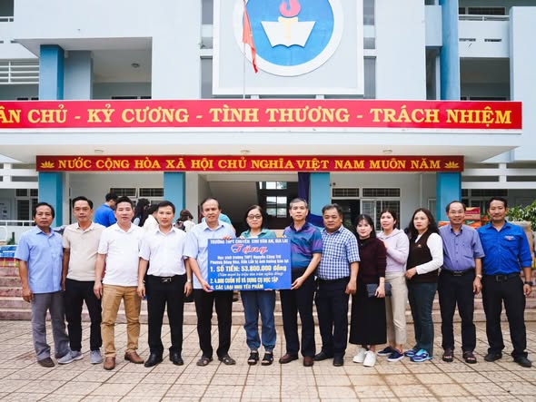
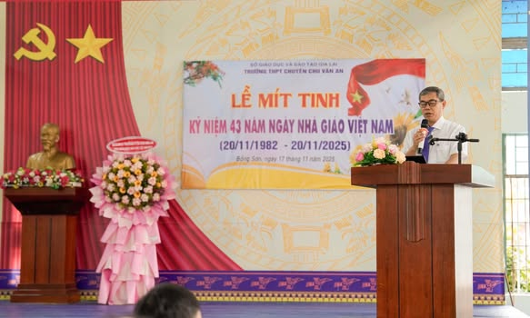

Trường THPT Chuyên Chu Văn An

Trình duyệt của bạn không hỗ trợ video.

Năm thành lập:
Trường THPT Chuyên Chu Văn An – Bình Định được thành lập năm 2016 và chính thức đi vào hoạt động từ năm học 2017–2018.
Vị trí:
Trường tọa lạc tại thị xã Hoài Nhơn, tỉnh Bình Định, là trung tâm giáo dục của khu vực phía Bắc tỉnh, thuận lợi cho việc học tập và sinh hoạt.
Quy mô – lực lượng:
Trường có đội ngũ cán bộ quản lý, giáo viên trẻ, có trình độ chuyên môn vững vàng, tâm huyết với nghề; học sinh được tuyển chọn kỹ lưỡng từ nhiều địa phương.
Chất lượng đào tạo:
Nhà trường chú trọng đào tạo học sinh theo hướng phát triển tư duy, bồi dưỡng năng lực chuyên sâu ở các môn học mũi nhọn.
Thành tích học tập:
Học sinh của trường đạt nhiều giải học sinh giỏi cấp tỉnh, từng bước khẳng định vị thế trong các kỳ thi học sinh giỏi cấp quốc gia; tỷ lệ học sinh khá giỏi và tốt nghiệp THPT luôn ở mức cao.
Định hướng tương lai:
Nhiều học sinh của trường trúng tuyển vào các trường đại học, cao đẳng uy tín trong và ngoài tỉnh.
Thể thao:
Trường thường xuyên tổ chức các hoạt động thể thao như bóng đá, bóng chuyền, cầu lông… giúp học sinh rèn luyện sức khỏe và tinh thần đoàn kết.
Hoạt động ngoại khóa:
Các hoạt động văn hóa, văn nghệ, trải nghiệm và kỹ năng sống được nhà trường quan tâm, góp phần giáo dục học sinh phát triển toàn diện.
Các hoạt động của trường
Bóng đá

Quyên góp sau bão lũ

Kỷ niệm nhà giáo

Tuyên truyền giao thông
Các liên kết của trường
Website
Fanpage
BACK